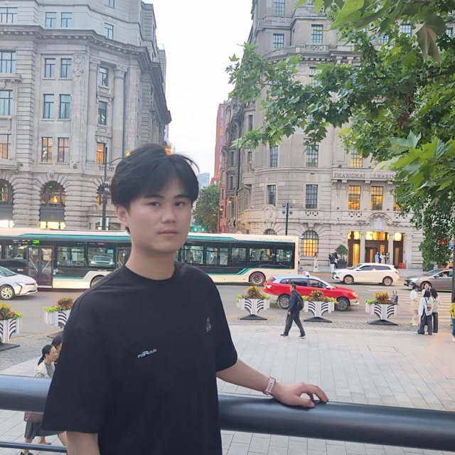
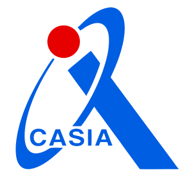

PhD · Pattern Recognition & Intelligent Systems
Huanxuan Liao 廖桓萱
I am a second-year PhD student in Pattern Recognition and Intelligent Systems at the University of Chinese Academy of Sciences (UCAS)
and the 
Better data & architectures for stronger models and longer horizons.
Research statement · Long-Horizon Adaptive Intelligence
I study foundation models for long-horizon adaptive intelligence: models that use growing contexts effectively, acquire and retain reusable capabilities across evolving tasks, and act reliably over extended interactions.
- Long-Context Data & Model Co-Design: long-context data curation and synthesis, length- and capability-aware mixtures, scalable pretraining and mid-training, efficient attention, KV-cache optimization, and architectures to jointly improve capability, scalability, and efficiency (Awesome-LCLM, HyCo2, SparK, ResAdapt).
- Knowledge & Continual Adaptation: mechanisms for acquiring, transferring, internalizing, and updating knowledge and capabilities across evolving tasks, while balancing plasticity, retention, and generalization (TAGI, AAG, NesyCD, SKIntern, SpaRTA).
- Agent Learning & Self-Improvement: persistent memory, long-horizon decision-making, and learning from interaction and feedback, toward agents that verifiably refine their memory, policies, and learning procedures (CITI, KATE, OPERATE, Distill Yourself, Scientist's Last Exam).
Education & Background
PhD in Pattern Recognition and Intelligent Systems
University of Chinese Academy of Sciences (UCAS) 2023 - Present
Institute of Automation, Chinese Academy of Sciences (CASIA) 2023 - Present
B.Eng. in Intelligence Science and Technology
North China Electric Power University (NCEPU) 2019 - 2023
Graduated with honors, Outstanding Graduate
Recent News
-
Paper One paper accepted to ACM TOIS'26. HyCo2 (first author).
-
Paper One paper accepted to EMNLP'26 (Main). BuPO (co-author).
-
Paper One paper accepted to the FAGEN Workshop at ICML'26. Multi-step tool-use RL study (co-author).
-
Paper One paper accepted to AAAI'26. SparK (first author).
-
Award Received the National Scholarship from the Ministry of Education at CASIA.
Earlier news
-
Paper One paper accepted to ACL'25 (Main). ETAPP (co-author).
-
Survey A Comprehensive Survey on Long Context Language Modeling released on arXiv (co-author and core contributor).
-
Paper One paper accepted to NeurIPS'24. TAGI (first author).
-
Paper One paper accepted to CCKS'23. Dynamic Weighted Neural Bellman-Ford Network (first author).
Award Received the Beijing Outstanding Graduate honor.
Publications
View on Google Scholar (* stands for equal contribution)
Loading publications...
Long-Context Data & Model Co-Design
Building foundation models that use growing contexts effectively and efficiently at scale.
Knowledge & Continual Adaptation
Acquiring, transferring, and retaining knowledge and capabilities across evolving tasks.
Agent Learning & Self-Improvement
Learning from interaction and feedback toward reliable, adaptive decision-making.
No publications match your filters. Try another research area or search term.
Awards & Honors
Scholarships & Honors
-
National Scholarship (国家奖学金)
Ministry of Education
CASIA (2025) - NCEPU (2021-2022, 2 consecutive years). Top scholarship in China; 0.2% domestically
-
Climbing Second Prize Scholarship
Institute of Automation, CAS, 2024
Top scholarship in CASIA
-
Beijing Outstanding Graduate Awards
Beijing Ministry of Education, 2023
Top graduate in Beijing
Competitions
-
National Third Prize
Information Security Competition, 2022
-
National Excellence
College Student Innovation and Entrepreneurship Project, 2021
Academic Services
Conference Reviewing
- ACL ARR 2024–2026
- NeurIPS 2025–2026
- ICML 2026
- COLM 2026
- ICLR 2025–2026
- AAAI 2026
Community Contributions
- Awesome-LLM-Long-Context-Modeling > 2.2k
- Distill Yourself Homepage
- LCLM-Horizon Survey Core Contributor
- NVIDIA/kvpress Contributor